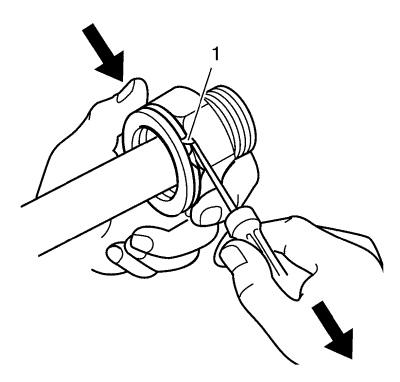
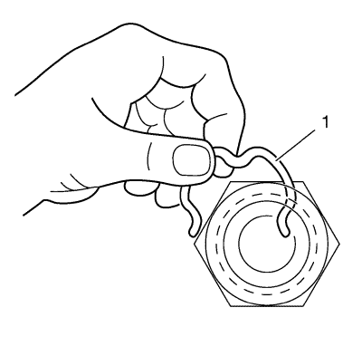
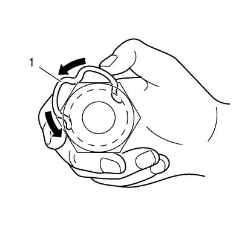
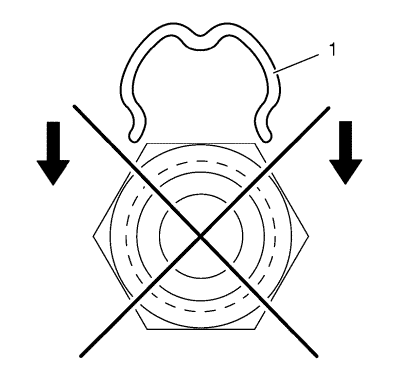
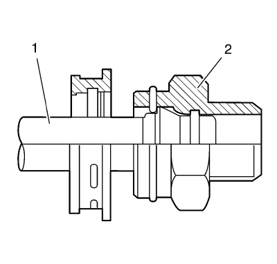
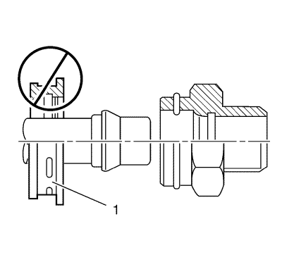
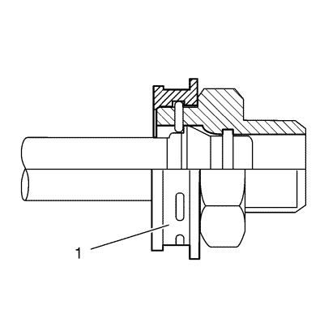
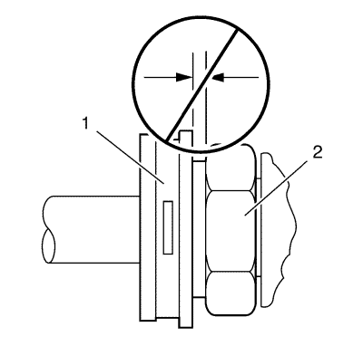
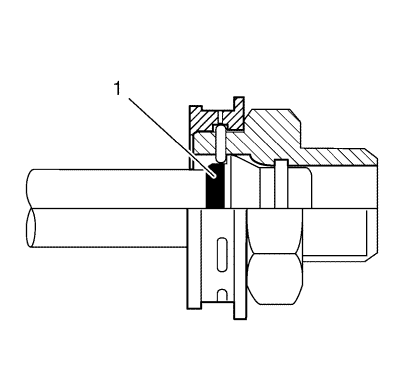
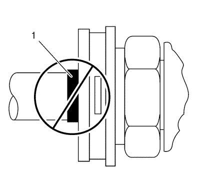

Desconexión y conexión del enchufe rápido del tubo flexible / tubería del refrigerador de aceite del cambio
Procedimiento de desmontaje

Nota: Realice el siguiente procedimiento cuando extraiga los anillos de seguridad y las tuberías del refrigerador de los herrajes de conexión rápida ubicados en el radiador y/o el cambio.
- Empuje hacia atrás la caperuza de plástico del herraje de conexión rápida y hacia abajo por la tubería del refrigerador unos 5 cm (2 pulg.).
- Con un destornillador de punta encorvada, tire de uno de los extremos abiertos del anillo de seguridad (1) para girar el anillo de seguridad alrededor del herraje de conexión rápida hasta que el anillo de seguridad salga de su sitio y se pueda extraer completamente.
- Extraiga el anillo de seguridad del herraje de conexión rápida.
- Deseche el anillo de seguridad.

- Tire de la tubería del refrigerador (1) hacia fuera desde el herraje de conexión rápida (2).
Procedimiento de montaje
Nota:
| • | No vuelva a utilizar ninguna de las tuberías de aceite o de los herrajes de la tubería de aceite existentes si hay demasiada corrosión. |
| • | No vuelva a utilizar ninguno de los anillos de seguridad existentes que hayan sido extraídos de los herrajes de conexión rápida existentes. Instale anillos de seguridad nuevos. |
| • | Asegúrese de realizar los siguientes procedimientos cuando instale los nuevos anillos de seguridad en los herrajes. |
- Instale un nuevo anillo de seguridad en el herraje de conexión rápida mediante el siguiente procedimiento:

- Enganche uno de los extremos abiertos del anillo de seguridad (1) a uno de los orificios oblongos del herraje de conexión rápida.

- Gire el anillo de seguridad (1) alrededor del herraje hasta que los tres extremos del anillo de seguridad pasen a través de los tres orificios oblongos del herraje.

- No instale el nuevo anillo de seguridad (1) en el herraje empujando el anillo de seguridad.

- Asegúrese de que los tres extremos del anillo de seguridad se ven desde el interior del herraje (1) y que el anillo de seguridad se mueve con libertad en los orificios oblongos del herraje.

- Monte la tubería del refrigerador (1) en el herraje de conexión rápida (2).
- Inserte el extremo de la tubería del refrigerador en el herraje de conexión rápida hasta que se oiga o se note un "clic".

- No utilice la caperuza de plástico (1) en la tubería del refrigerador para montar la tubería del refrigerador en el herraje.
- Tire de la tubería de refrigerador hacia atrás bruscamente para asegurarse de que está sujeta al herraje de conexión rápida.

Nota: No presione manualmente el clip de fijación cuando ponga la caperuza de plástico.
- Coloque (cierre de golpe) la caperuza de plástico (1) en el herraje. No presione manualmente el anillo de seguridad cuando ponga la caperuza de plástico en el herraje de conexión rápida.
- Asegúrese de que la caperuza de plástico esté completamente acoplada al herraje.

- Asegúrese de que no hay ninguna separación la caperuza de plástico (1) y el herraje (2).

- Asegúrese de que la banda identificadora (1) del tubo está oculta dentro del herraje de conexión rápida.

- Una banda de identificación amarilla (1) indica que la articulación está asentada correctamente.
- Llene el cambio hasta el nivel adecuado. Consultar Comprobación del nivel y el estado del aceite del cambio .
| © Copyright Chevrolet. Reservados todos los derechos |